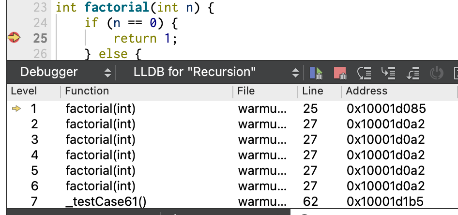
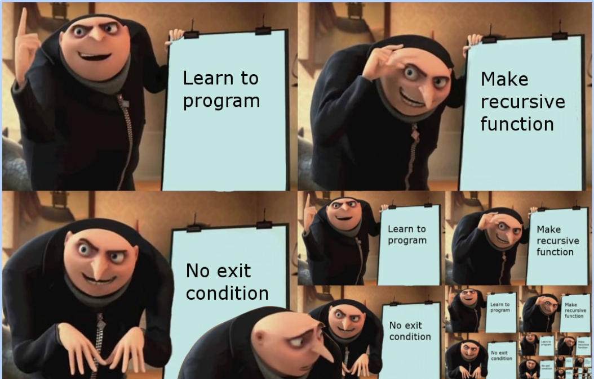

"Bugs are normal" by Julia Evans
"Bugs are normal" by Julia Evans
1) Examine recursive stack frames (factorial)
The factorial n! is defined as the product n * (n-1) * (n-2) * ... * 3 * 2 * 1. The recursive approach to computing factorials uses the insight that:
0!is defined to be1n!can be computed asn * (n-1)!
To express in code, we have a base case that returns 1 for zero and use a recursive case to compute the result for n building on the result from n-1.
Open the assignment starter project in Qt Creator. Find the file warmup.cpp and review the provided code for the recursive factorial function. We will use this function as practice for examining recursive stack frames.
Place a breakpoint on the line return 1 within the base case of factorial. Run the program in Debug mode and when prompted, select the test group warmup.cpp. When your program stops at the breakpoint, look to the lower middle/left of your debugger and find Call Stack pane (see screenshot below):

This pane displays the current call stack, the sequence of active functions leading up to the point where the breakpoint was reached. Each entry in the call stack corresponds to a function that has been called and not yet finished executing.
The innermost level (Level 1) is the currently executing function. It was called from the function at Level 2, who was called from Level 3 and so on.
The small yellow arrow next to Level 1 indicates that this function is currently selected. Elsewhere in debugger window, the Editor pane (upper left of debug window) shows the source lines for the selected function and the Variables pane (upper right of debug window) displays the value of the variables of the selected function.
In the call stack pane, click the function at Level 2 and the yellow arrow
moves to indicate this function is now selected. The Editor pane and the Variables pane update to show the source code and data for this function. Click to select Level 3, and then Level 4. As you move through the levels, look at the Variables pane and note that each recursive call has its own independent copy of n that is distinct from the other n variables that belong to the other function calls.
Each active function on the call stack has a place designated in the computer's memory to store its own parameters and variables. The function's storage is called its "stack frame."
When stepping through a deep recursive sequence, it is easy to become confused with so many similar stack frames. Look for that yellow arrow in the call stack pane to confirm which level of the recursion is currently selected.
Q1. Looking at a call stack listing in a debugger, what is the indication that the program being debugged uses recursion?
2) Recognize stack overflow (factorial)

The one provided test makes a single call to factorial and confirms the result is correct. What other inputs should be tested? In mathland, factorial is defined only for non-negative numbers, hmm…. so what should happen in C++ land if you try to evaluate factorial(-3)? Perhaps an error? Trace the code and make your own prediction of the outcome.
Add a STUDENT_TEST that expects an error from factorial(-3). Run the program normally, not in Debug mode, and observe. Boom! When attempting to run that test, the program unceremoniously exits, right in the middle of execution with no explanation of what went wrong.
In the past when our program raised an error, SimpleTest caught the error and reported it with a helpful message. But this particular error, stack overflow, is too slippery to be tamed. A stack overflow occurs when a function recursively calls itself without end. Each call to the function requires storage space for its stack frame and the unceasing growth of stack frames eventually exhausts the amount of memory available for the call stack.
For ordinary errors, our libraries can detect and report the problem and perhaps even gracefully recover. But the catastrophic
nature of stack overflow in C++ causes a hard, unavoidable program crash. The Application Output tab in the Qt Creator window gives only a terse mention that the program "crashed" or "unexpectedly quit" and nothing more.
This is an opportunity for the debugger to save the day! By running under the debugger, you gain the ability to stop at the time of the crash and use the debugger to inspect the program state at the critical moment.
Delete any breakpoints and re-run the program in Debug mode. Your student test causes a stack overflow just as before, but the program is now running under the watchful eye of the debugger. The debugger sees the crash coming, prevents the program from exiting, suspends the current state and shows it in the debugger window. Using the debugger, you can find out what code was executing at the time of the crash, examine the values of your variables and so on.
Viewing the call stack in the debugger tells you where the program was executing at the time of the crash and the sequence of steps that led up to it. When the call stack pane is filled with level after level of the same recursive function calling itself non-stop, this is the evidence that loudly shouts, "Uh oh, stack overflow".
This will probably not be the last time you need to diagnose a stack overflow, so learn how to recognize it!
In a non-error situation, the call stack displays all frames back to the main function at the bottom of the stack. In a stack overflow situation, it will abbreviate to show only a selection of the topmost frames. Scroll down and click on the "More…" entry to expand to show additional frames. To fully expand the entire call stack ,you may have to hit "More…" several times.
The level at the top (numbered Level 0 or Level 1) is the innermost. At the bottom is the outermost level; it has the largest level number. You may have to drag the column divider to enlarge the column width to fit all the digits when the level number is larger.
Click to select different levels on the call stack (say, Level 1, then Level 2, and few beyond) and look at the Variables pane to observe how the value of the parameter n is different for each level.
There is a fixed amount of memory set aside for the call stack, and if that space is exhausted, it's game over. Poke around in the debugger at the time of the stack overflow to determine how many functions call is "too many" on your system. You can estimate that count by subtracting the innermost level number from the outermost in the call stack pane or looking at the value of the parameter n in one of the innermost frames and comparing to the value of n in one of the outermost frames.
Q2. Give an estimate of the maximum number of function calls that can be stacked up on your system before a stack overflow is triggered.
Note: If a program has hit stack overflow, the situation is rather fragile and the debugger may run into trouble when you try to examine the call stack. Here are a few oddities to watch out for:
- The variables of the innermost frame may have unreliable values. The innermost frame was the final straw that broke the camel's back. The crash occurred while adding this frame, interrupting the process of initializing the parameters and variables. In such a case, instead look at the frame one level away which should have reliable values.
- Scrolling down to the outermost frame may hit an abrupt end before you get to the true bottom of the call stack. The display might be misleading (e.g. Qt Creator limiting the number of frames to display and eliding the rest) or in dicier situations, Qt can itself crash when you ask it to show more frames. If Qt isn't being cooperative, you can estimate of the count of frames stack by subtracting the value of
nin an innermost frame from the value ofnin the outermost recursive call (which you know is the initial callfactorial(-3)).
In the warmup of last week's assignment, you used the debugger to diagnose the symptom of an infinite loop. Above you have just learned to diagnose infinite recursion. Although the root cause to both errors is somewhat similar (a repeating process that fails to terminate), they present with different symptoms.
Q3. Describe how the symptoms of infinite recursion differ from the symptoms of an infinite loop.
Edit the code of factorial to fix the problem. When given a negative argument, factorial should call error. Re-run to confirm that your fix works. There should be no infinite recursion, no stack overflow, your student test case should pass and provide a helpful error message. Much better!
3) Generating test cases
The warmup.cpp file contains two functions to compute raising a base to a power. The function iterativePower uses a loop and recPower operates recursively. Assuming that the iterative version works correctly, let's practice using it as a cross-comparison to test the recursive power function.
One simple approach is to call the two functions passing the same arguments and compare the results for equality:
PROVIDED_TEST("Test recursive power against iterative power") {
EXPECT_EQUAL(recPower(7, 3), iterativePower(7, 3));
}
The above provided test is a simple "spot check" on a single input. It's a good start, but not particular thorough or comprehensive.
Rather than tediously lots of enumerating individual cases, consider how you can write code witin the test case to mechanically generate a whole swath of inputs, such as shown in the loop below. Neat! With this approach, you can easily broaden your coverage with a simple change to the loop range.
PROVIDED_TEST("Test recursive power against iterative power, generated inputs") {
for (int base = -8; base < 60; base++) {
for (int exp = 0; exp < 10; exp++) {
EXPECT_EQUAL(recPower(base, exp), iterativePower(base, exp));
}
}
}
Mechanically-generating test inputs is a great technique to keep in your bag of tricks, it is sure to come in handy.
Q4. In place of selecting values over a defined range, an alternate approach would be to randomly select values for base and exponent. Such a test case would test something different each time you ran it. This test approach is part of a larger approach known as "fuzz" testing. What do you see as possible benefit and downside of randomness being used in a test case?
4) Timing a recursive function
Lastly, a little foray in time trials and Big-O analysis of a recursive function.
The recPower takes two arguments, base and exp. Our goal is to understand how changing the size of the the input values affects the function's runtime. If you call the function a few times, doubling the value for base while keeping constant exp, do you expect that all calls will perform the same number of operations or will the larger base values require more? What if you double the value of exp while holding base constant?
Let's run some time trials to see what effects we can observe empirically. The code has two provided time trials, one that measures the runtime while changing base, the other while changing exp.
If you run these tests as-is, you will discover that all reported times are 0 seconds. Any single call to the function
executes so quickly that it is beneath our threshold of measurement. Modern computers are fast! – executing literally billions of operations in a second.
A common strategy to get around this is to execute the function a large enough number of iterations that it aggregates to a measurable amount of time, as shown in the manyPowerCalls helper function.
Try increasing values for NUM_ITERATIONS and re-testing until you hit a sufficient number of iterations for the first time trial to take roughly a quarter of second.
Q5. What was the number of iterations of recPower did it take on your system to amount to a quarter second? Copy/paste the time results of the two time trial sequences running on that number of iterations.
Look over the times reported for the sequence of trials and note how the time changes (or not) with the change in size of the input changes. When changing base, the times are not expected to change. (although unlikely to hold exact constant due to noise, the overall trend should be flat). When changing exp, the times are not changing much, but do reflect the very slight upward trend of O(logN). As discussed in lecture, O(logN) grows extremely slowly, just barely distinguishable from a flat O(1). It's neat to see how our empirical results can be used to confirm our theoretical understanding!
Q6. Explain how the recursive structure of recPower results in a Big-O runtime of O(logN) relative to the size of its exp argument.
One nice design feature of our testing framework is that it allows to you to add any arbitrary code you'd like within a test case. Having the entire C++ language at your disposal is an ocean of options: loops, randomness, function calls, data structures, and more that let you go far beyond just enumerating individual test cases. Hooray for SimpleTest!